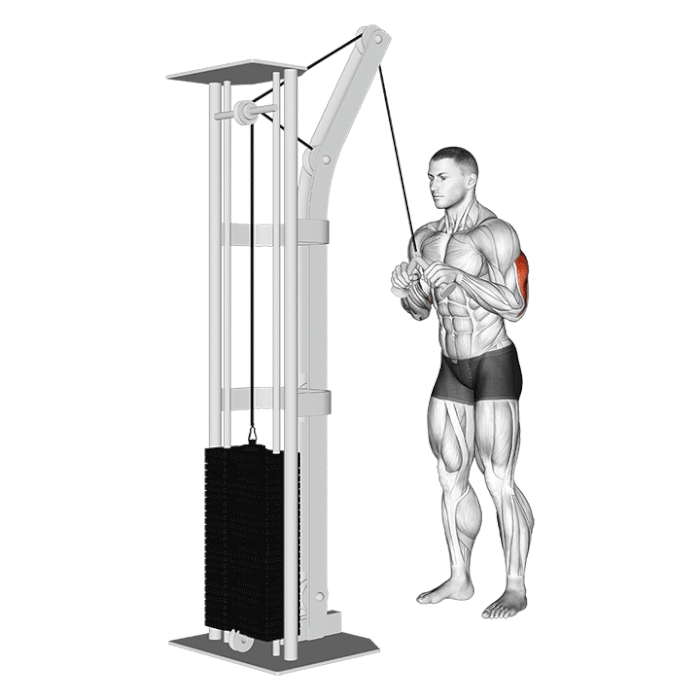

Cable Rope Pushdown, znan tudi kot triceps curl, je vaja, pri kateri oseba uporablja kabel in vrv, da izvede potiskanje navzdol proti uporu. Ta vaja predvsem cilja na mišico tricepsa (triceps brachii), ki se nahaja na hrbtni strani zgornjega dela roke. Gre za izolacijsko vajo, ki se pogosto uporablja za krepitev in razvoj mišic tricepsa.
Set up a cable machine with a rope attachment attached to the top pulley. Grip the rope with an inverted grip, with your hands close together. Position your feet shoulder width apart, with knees slightly bent for stability. Push rope down and pull the rope apart to the side so that your hands finish by your hips at the bottom of the movement.
Trajanje: minut
Kalorije: kcal
Vrsta:
Težavnost:
Kratek opis: